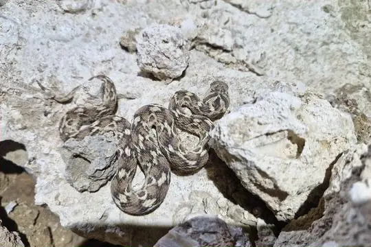
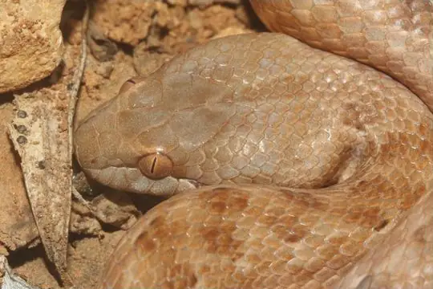
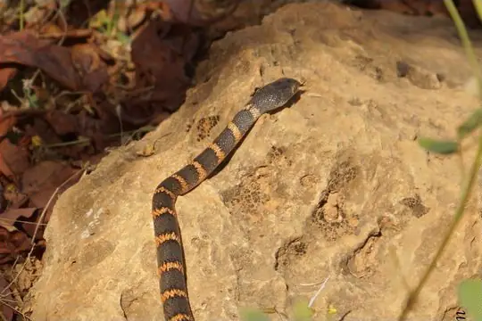

Snakes of Yemen
26 snake species are recorded in Yemen in SnakeList: 10 venomous and 16 non-venomous, from 9 families.
- 26species
- 10venomous
- 16non-venomous
- 9families
These totals count the snakes SnakeList records as living in Yemen. A species counts if it is recorded anywhere in the country, so not every snake lives in every region.
Species
Showing 26 species
- No photo yetAden Kukri SnakeRhynchocalamus arabicus
 Arabian Cat SnakeTelescopus dhara
Arabian Cat SnakeTelescopus dhara Arabian CobraNaja arabica
Arabian CobraNaja arabica- No photo yetArabian Egg-eaterDasypeltis arabica
 Arabian Sand BoaEryx jayakari
Arabian Sand BoaEryx jayakari Arabian Sand ViperCerastes gasperettii
Arabian Sand ViperCerastes gasperettii Arabian Small-Scaled Burrowing AspAtractaspis andersonii
Arabian Small-Scaled Burrowing AspAtractaspis andersonii
Borkin's ViperEchis borkini Boulenger's Blind SnakeMyriopholis macrura
Boulenger's Blind SnakeMyriopholis macrura- No photo yetBury's Worm SnakeMyriopholis burii
 Desert Horned ViperCerastes cerastes
Desert Horned ViperCerastes cerastes Forskal Sand SnakePsammophis schokari
Forskal Sand SnakePsammophis schokari
Günther's RacerDitypophis vivax Khosatzki’s Saw-scaled ViperEchis khosatzkii
Khosatzki’s Saw-scaled ViperEchis khosatzkii Levantine ViperMacrovipera lebetinus
Levantine ViperMacrovipera lebetinus Moila SnakeMalpolon moilensis
Moila SnakeMalpolon moilensis Nurse's Blind SnakeMyriopholis nursii
Nurse's Blind SnakeMyriopholis nursii Palestine Saw-scaled ViperEchis coloratus
Palestine Saw-scaled ViperEchis coloratus- No photo yetSocotra Island Blind SnakeMyriopholis filiformis
 Socotra Worm SnakeXerotyphlops socotranus
Socotra Worm SnakeXerotyphlops socotranus
Socotran RacerHemerophis socotrae Thomas' Semi-banded RacerPlatyceps thomasi
Thomas' Semi-banded RacerPlatyceps thomasi- No photo yetVariable SnakePlatyceps variabilis
 Wadi RacerPlatyceps rhodorachis
Wadi RacerPlatyceps rhodorachis Wilson's Blind SnakeMyriopholis wilsoni
Wilson's Blind SnakeMyriopholis wilsoni- No photo yetYemen Blind SnakeMyriopholis yemenica
No snakes in Yemen match.
Yemen’s snakes in numbers
- Families: Colubridae 7, Leptotyphlopidae 6, Viperidae 6, Psammophiidae 2, Atractaspididae 1, Boidae 1, Elapidae 1, Pseudoxyrhophiidae 1, Typhlopidae 1.
- 8 are recorded in no other country in SnakeList: Borkin's Viper, Boulenger's Blind Snake, Günther's Racer, Socotra Island Blind Snake, Socotra Worm Snake, Socotran Racer, Wilson's Blind Snake, Yemen Blind Snake.
States and provinces
The states and provinces where SnakeList records snakes, with how many species each has. Each page has its families, venomous snakes, the species found only there, its cities and neighbours.
- Al Mahrah 1 species
- Hadhramaut 5 species
No place matches that.
Cities
Its biggest cities, biggest first. Snakes are recorded by state or province, not by city, so each city page shows the snakes of the state or province it is in.
- Mukalla Hadhramaut
No place matches that.